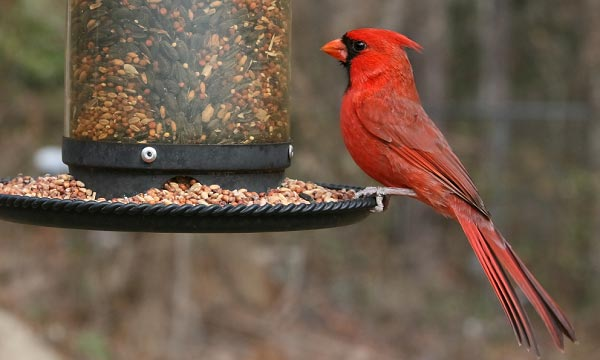

Animals need your help! an this page you can see how to help all kinds of animals in need.
do a creek clean up
Fish, frogs, and other wild creatures depend on clean, fresh water in our rivers and creeks. A lot of trash finds its way into the water a pollutes it,
making it hard for animals to live there.
But you can help! Contact your local water department, parks service, or fish and wildlife office to find out about opportunities for creek clean up.
If they don't have one, discuss organizing your own!
create an animal habitat
Many wild animal species are losing numbers as their wild homes get cut down to make way for roads, businesses, and homes for people.
Wildlife preserves are helpful to this situation, but they are not enough! Many migrating birds and insects, and even some mammals, have been losing many of their places that they used to stop over along their migration route to find food, water, and shelter.
But you can help by turning your backyard or schoolyard into a wildlife habitat. you can put up a bird feeder,grow some trees,plant some flowers and much more!
